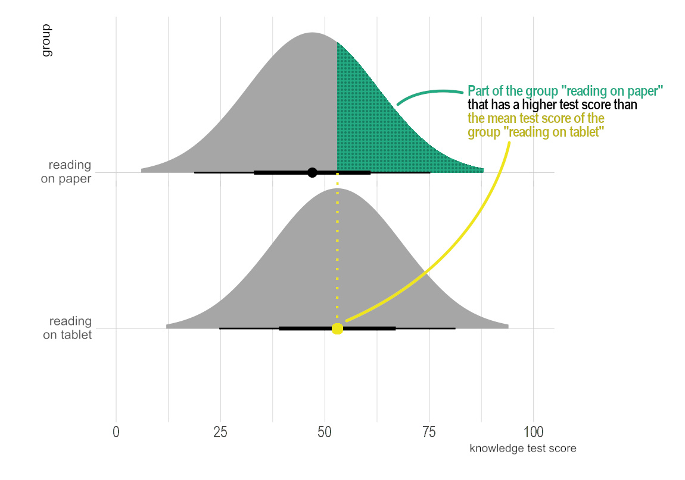
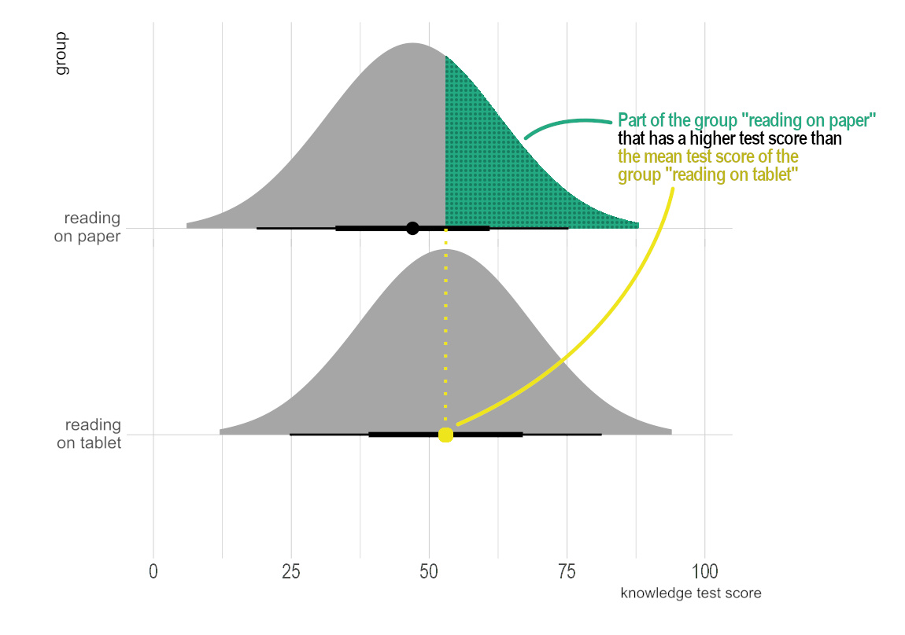

Teachers’ Engagement With Educational Science
How to Communicate Findings From Educational Science in a User-Friendly Way to Teachers
Institut für Schul- und Unterrichtsentwicklung
Dienstag den 23. Juli, 2024
Evidenzinformierte Schulpraxis
- wissenschaftliche Evidenz und Theorien situationsangemessen im professionellen Handeln berücksichtigen (Bauer et al., 2015)


→ Steigerung der Professionalisierung von Lehrpersonen, der Schul- und Unterrichtsqualität und Schüler:innenleistung (Refs)
- idealisierter Ablauf
 (großophoff2023?)
(großophoff2023?)
Wissenschafts-
kommunikation
 |
 |
 |
|
 |
 |
 |
Eigene Forschungstätigkeiten
Studie 1
Studie 2

Studie 3
Design
- Unvollständig rotiertes 5x6 Within-Within-Design
- Within-Faktor 1: Thema
- G8
- Motivationsförderung in Mathematik
- Faktenboxen
- PISA
- Untertitel in Filmen

- Within-Faktor 2: statistische Beschreibung
- Standard Signifikanz-Aussage
- Definition des p Wertes
- Beschreibung Bayes Faktor
- Beschreibung von Cohen’s d
- Beschreibung von Cohen’s U3
- Kombinierte Aussage aus Inferenzstatistik und Effektstärke
- Within-Faktor 1: Thema

 |
 |
|
 |
 |
 |
Abhängige Variablen
- Wahrgenommene Informativität

- Interpretation als Inferenstatistik

- Interpretation als Effektstärke


Eigene Forschungstätigkeiten
Studie 1
Studie 2
Studie 3
Studie 2
Link zum Preprint
Abhängige Variablen
Interpretation als Inferenstatistik

Interpretation als Effektstärke

Studie 2
Link zum Preprint: XXX
Eigene Forschungstätigkeiten
Studie 1
Studie 2
Studie 3
Ablauf des Forschungsprojektes

Design
Konfirmatorische Studie
4x4x10x2 Between-Between-Within-Within Design
Between-Faktor 1: Thema
Between-Faktor 2: Experimentalbedingung
- Kontrollgruppe
- Benchmark
- Signaling Cohen’s U3
- Signaling Overlap
 
 
Within-Faktor 3: präsentierte Effektstärke
d ∈ {−.80; −.65; −.50; −.35; −.20; .20; .35; .50; .65; .80}Within-Faktor 4: Visualisierungsart
- Halfeye plot mit Gruppen auf der x-Achse
- Halfeye plot mit Gruppen auf der y-Achse

Abhängige Variablen
Wahrgenommene Informativität (AV 5)

Akkuratheit (AV 1a & 1b)
Cohen’s U3 Fehlkonzept: Median der U3 Ratings einer Person < 21.2% (kleinster plausibler Wert, der d = −.8 entspricht)


Eigene Forschungstätigkeiten
Studie 1
Studie 2
Studie 3
Ergebnisse
- unterschiedlich informative statistische Beschreibungen

Adaptiert von Schmidt et al. (2023) - Differenzierung zwischen Inferenzstatistik und Effektstärken

Adaptiert von Schmidt et al. (2023) - verschiedene Interpretationsprofile, die korrekte Interpretationen und verschiedene Fehlinterpretationen zusammenfassen


{kind=link}
{kind=link}
{kind=link}
{kind=link}
{kind=link}
{kind=link}
Ergebnisse
| Akkuratheit | Informativität | Fehlkonzept | |
|---|---|---|---|
| Signaling U3 |   |
geringere Anzahl an U3-Fehlkonzepten bei Signaling U3-Bedingung |
{kind=link}
{kind=link}
Diskussion, Ausblick und Limitationen
Gestaltung verständlicher Wissenschaftskommunikation herausfordernd

Diskussion, Ausblick und Limitationen
Rezeption eine notwendige, aber nicht hinreichende Bedingung für gelingendes evidenzinformiertes Handeln
_adapted_evidence.png)
Eigene Adapation des Prozessmodell nach (Groß Ophoff et al., 2023)
Literatur